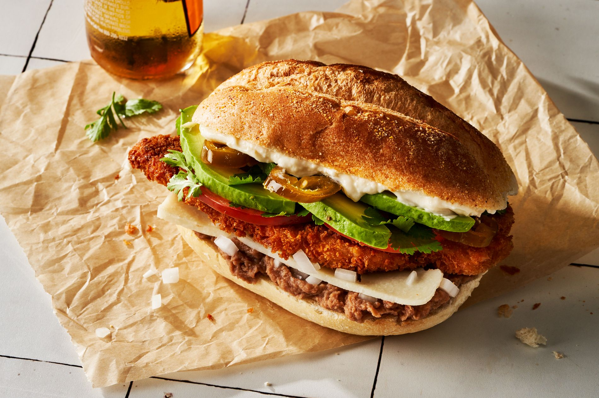

Lasagna

Description
Mexican tortas are one of the most delicious types of sandwiches. No surprise, since Mexican food tends to be crazy delicious across the board. Though tortas can be a pretty hearty meal on their own, a bowl of salsa or guacamole with tortilla chips would be welcome alongside. Serve with a refreshing drink like Tepache, a Michelada, or a watermelon agua fresca.
Tortas are made with soft rolls—bolillo or telera rolls are traditional—and are stuffed with meat and a variety of toppings. We like pickled jalapeño, raw white onion, queso fresco, avocado, tomato, and refried beans on our tortas, but crema, salsa, and shredded cabbage are common toppings too. This torta recipe follows the "torta de milanese" tradition, featuring a breaded chicken cutlet (though they're often made with pork, which you can swap in, if you like). The crispy cutlet adds nice crunch to each bite. If you're looking for a torta made with beef, try our carne asada torta instead.
If you can't find bolillo or telera rolls, look for a similarly soft roll that's about 5" wide. A soft Portuguese roll, kaiser roll, or very soft Italian roll will all work well.
Ingredients
- 1 1/4 c. panko bread crumbs
- 2 large eggs
- 1/4 c. unbleached all-purpose flour
- 4 (1/4"-thick) chicken cutlets (about 1 lb. total)
- Kosher salt
- Freshly ground black pepper
- Vegetable oil, for frying
- 4 telera, bolillo, or other soft, 5" rolls
- 1 (16-oz.) can refried pinto or black beans, warmed
- 1/4 white onion, finely chopped
- 8 oz. queso fresco, thinly sliced
- 2 ripe small tomatoes, thinly sliced
- 1 large avocado, thinly sliced
- 1/2 c. fresh cilantro leaves
- 1/4 c. mayonnaise
- 1/2 c. sliced pickled jalapeños
Steps
- In a shallow bowl, crush panko a few times with your hands to break into smaller pieces. In another shallow bowl, beat eggs to combine. Place flour in a third shallow bowl.
- Season chicken with 1/2 tsp. salt and 1/4 tsp. black pepper. Working one at a time, coat chicken in flour, shaking off excess. Dip chicken into egg, then into panko, pressing to adhere. Transfer to a plate.
- Into a large heavy pot, pour oil to a depth of 1/4"; heat over medium-high heat until shimmering. Fry 2 cutlets, turning halfway through, until chicken is cooked through and panko is golden brown, 2 to 3 minutes per side. Transfer chicken to a wire rack set over a rimmed baking sheet or paper-towel lined plate; season with salt. Repeat with remaining cutlets.
- Slice rolls open. Spread cut side of bottom buns with beans. Sprinkle with onion and cheese, then top with cutlets, tomato, avocado, and cilantro. Spread cut side of top bun with mayonnaise and top with jalapeños. Close sandwiches and serve.